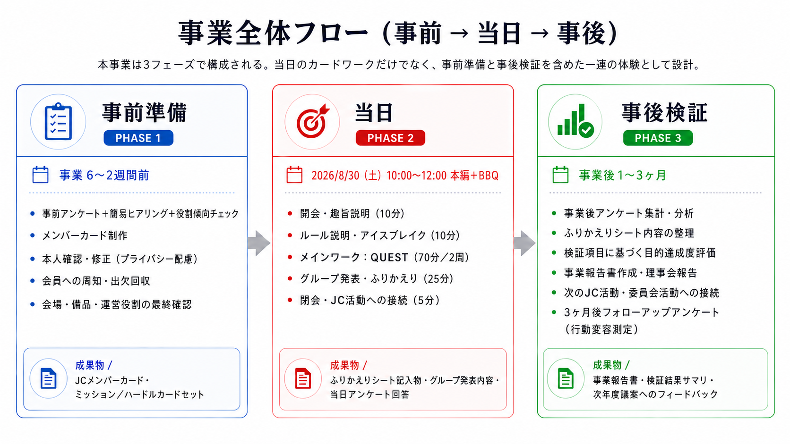

📌 この事業を1行で言うと
既存会員を対象に、メンバーの仕事観・強み・地域での役割をカード化し、公益事業ミッションを起点に「誰に何を頼り、どう役割分担するか」をグループで考える参加型カードワークを通じて、相互理解・役割発見・共助意識を育てる事業。
WHY 一部メンバーへの負担集中・関わり方の差 →
WHAT 全員で支え合う関係づくり →
HOW KAGA JC GATHERING（仮） →
VERIFY アンケート・ふりかえりで定量検証
